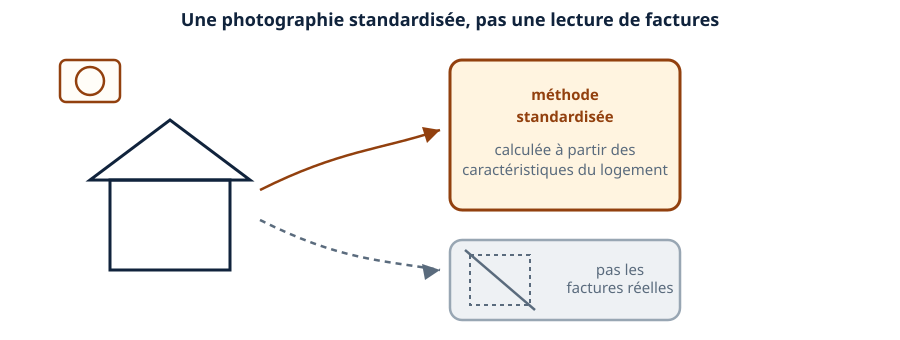
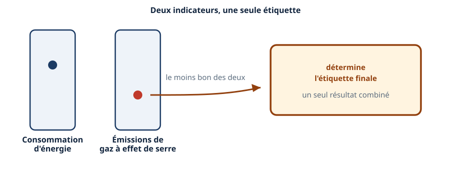
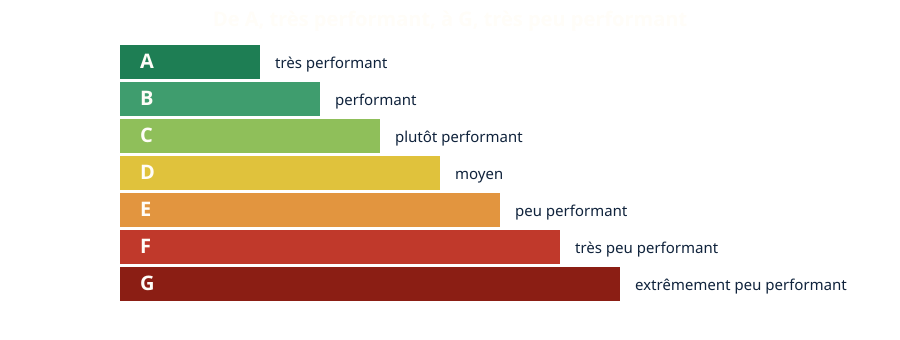
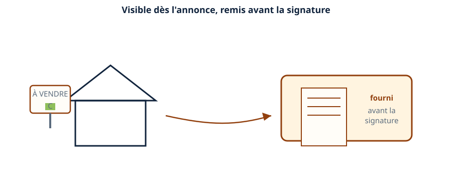
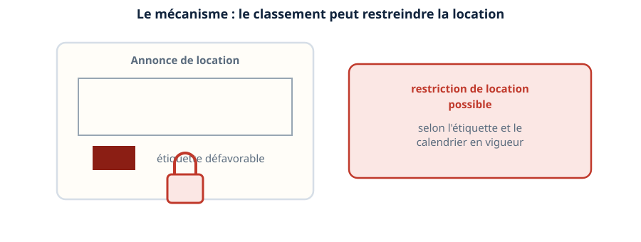
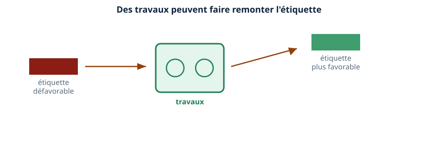
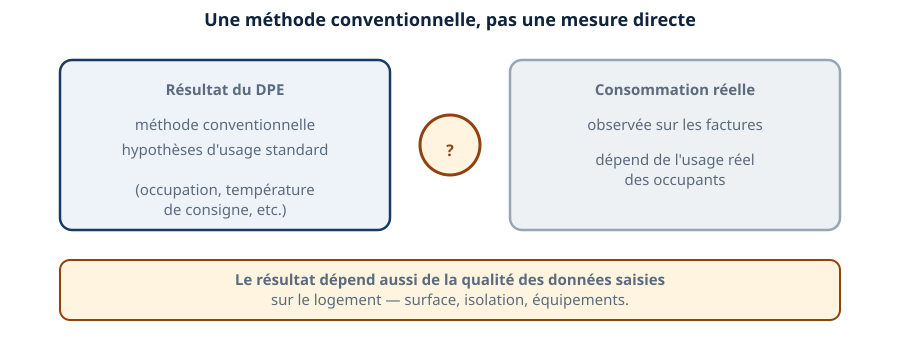
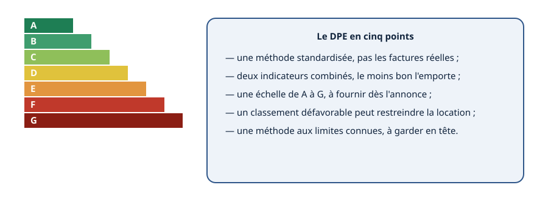

Thermique · niveau BTS
Le DPE — lire l'étiquette, connaître ses limites
Mini-station commentée · 8 écrans et 4 questions · environ 10 minutes
À la fin de la station, vous savez ce que mesure le DPE, comment se lit son étiquette de A à G, ce qu'il déclenche pour un propriétaire qui vend ou loue, et pourquoi ce résultat n'est pas une lecture directe des factures.
Chaque écran peut être expliqué à voix haute : le bouton « Écouter » commente ce que vous voyez. Rien n'est dit qui ne soit aussi écrit.
Écran 1 sur 8
Le DPE : une photographie standardisée
Le diagnostic de performance énergétique estime la consommation et les émissions d'un logement à partir d'une méthode standardisée : les caractéristiques du bâti et des équipements, pas les factures réelles des occupants.
C'est un point à retenir avant tout le reste : deux logements identiques sur le papier reçoivent le même DPE, même si leurs occupants consomment très différemment.

Écran 2 sur 8
Deux indicateurs combinés
Le DPE combine deux résultats : la consommation d'énergie et les émissions de gaz à effet de serre du logement.
L'étiquette finale retient le moins bon des deux. Un logement excellent sur l'un des deux indicateurs, mais mauvais sur l'autre, reçoit l'étiquette du moins bon résultat.

Écran 3 sur 8
Lire l'étiquette : de A à G
L'échelle du DPE va de A, le plus performant, à G, le moins performant. Sept lettres, sept classes.
C'est cette lettre qui apparaît sur les annonces immobilières, et c'est elle qui déclenche les conséquences vues dans les écrans suivants.

Écran 4 sur 8
Ce que le DPE déclenche : l'obligation d'information
Le DPE doit être affiché dès l'annonce de vente ou de location, et fourni à l'acheteur ou au locataire avant la signature.
Ce n'est pas une formalité facultative : un propriétaire qui vend ou loue son bien doit disposer d'un DPE valide, et le communiquer.

Écran 5 sur 8
Ce que le DPE déclenche : la restriction de location
Au-delà de l'information, un logement mal classé peut voir sa mise en location restreinte. Le mécanisme existe ; la lettre exacte et le calendrier précis évoluent et se vérifient sur le texte en vigueur.
C'est une conséquence concrète, pas seulement symbolique : un mauvais DPE peut empêcher de louer un bien tant que rien n'est fait.

Écran 6 sur 8
Le lien avec vos travaux
Des travaux d'amélioration — remplacer une chaudière par une pompe à chaleur, isoler — peuvent faire remonter l'étiquette d'un logement.
C'est souvent ce qui pousse un propriétaire à investir : sortir un logement de la zone défavorable, pour lever une restriction ou améliorer son attractivité. Le financement de ces travaux est le sujet de la station suivante.

Écran 7 sur 8
Les limites du DPE
Le DPE repose sur une méthode conventionnelle, avec des hypothèses d'usage standard. La consommation réelle d'un logement dépend de la façon dont ses occupants l'utilisent, et peut s'écarter du résultat du DPE.
Le résultat dépend aussi de la qualité des données saisies sur le logement — surface, isolation, équipements. Une donnée mal renseignée fausse l'étiquette.

Écran 8 sur 8
Bilan et le réflexe
- Le DPE est une méthode standardisée, pas une lecture des factures réelles.
- Il combine deux indicateurs : consommation d'énergie et émissions de gaz à effet de serre, le moins bon l'emporte.
- Son échelle va de A à G, à afficher dès l'annonce.
- Un mauvais classement peut restreindre la location — le seuil exact se vérifie sur le texte en vigueur.
- C'est une méthode aux limites connues : à garder en tête face à un client.
Le réflexe : le DPE éclaire, il ne remplace jamais la facture réelle.

Question 1 sur 4
Sur quoi se base le DPE ?
Question 2 sur 4
Excellent sur un indicateur, mauvais sur l'autre : quelle étiquette ?
Question 3 sur 4
Quand le DPE doit-il être fourni ?
Question 4 sur 4
Pourquoi le DPE peut-il différer des factures réelles ?
Les correspondances de la station
- RT de l'existant (même sous-ligne) — un DPE défavorable pousse souvent vers ces travaux de rénovation.
- Les CEE (même sous-ligne) — comment financer les travaux que le DPE révèle nécessaires.